The nearest village is Kabula, about five minutes by foot. It is not a big town, but rather a small village.
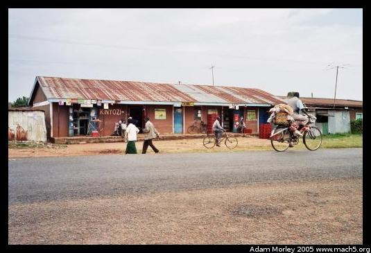 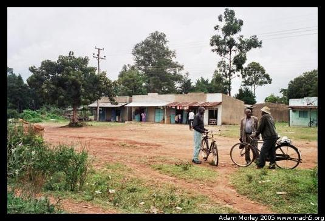The east side and west side of the street going through Kabula.
Bungoma is the nearest large town, on the road between Nairobi and Uganda. You can actually see Bungoma in most satellite photos (such as Google Earth).
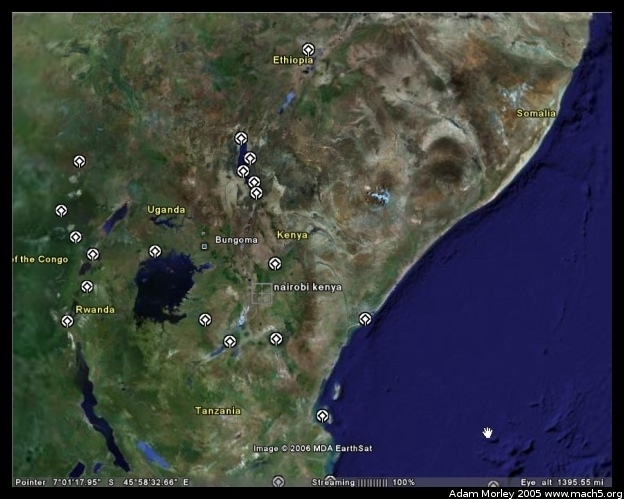Above, you can see a map of Kenya with Bungoma and Nairobi plotted on the map. This map comes from Google Earth, a rather neat program. The little white logos are UNESCO sites.
When I returned from Kenya, I found out about the National Geographic flyover of Africa. So I started poking around in Google Earth looking for Bungoma. When zoomed in on Bungoma's lat/long, you can see the development of the town, and can see Mumias to the south. One can also make out the road between the two. Along that road, there is a photo from the flyover shown:
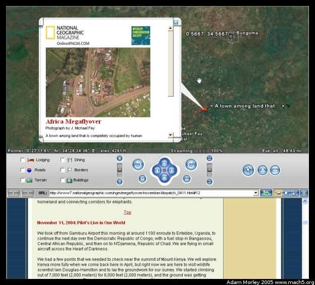This photo is of a T-junction in the road. This T-junction is about 20km south of Bungoma, and about 5km north of Mumias. Other volunteers will know this area fairly well. I can't quite remember the time (to estimate distance), but I think this is the T-junction for the road to Busia. You know, where that Ken Oil station is that Peter would sometimes have to go get gas at when we ran out while headed south. I took a peak at my map of Kenya, and my memory seems to jive with the distances for the turn to Busia. If this is indeed the turn to Busia, it's quite odd to see a place I spent a lot of time around on the African mega-flyover.
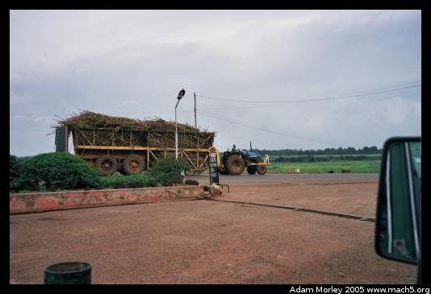A photo of a sugar cane trailer pulled by a tractor, taken from the Ken Oil station. Sugar cane is a major cash crop in the area, which is processed by Mumias Sugar. Most sugar is exported overseas. Sugar cane can make a good amount of money compared to other crops, but cane requires a long time to grow and a significant investment in crop space.
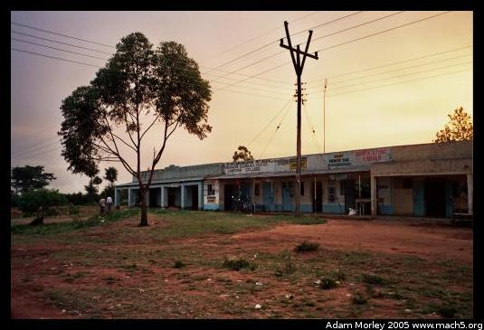Sunset over the shops of Bungoma. Taken by the matatu stage on the west side of the road. Kabula isn't very big.
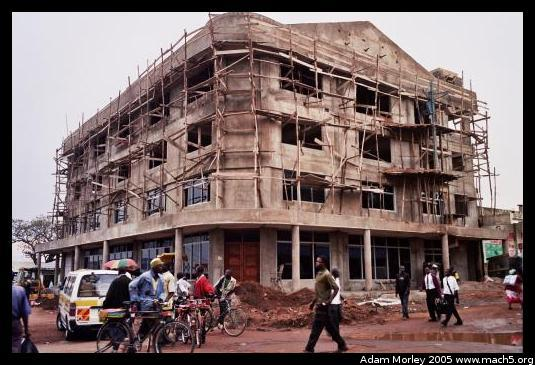A new building being constructed at the southern end of the main street in Bungoma, near the bus stage. Notice the scaffolding and bicycle taxis.
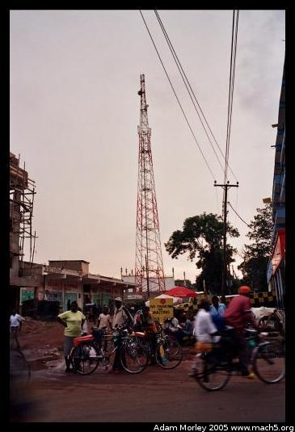Just behind the building is one of the cellular towers. We stumbled across another one while driving around to the southwest of Kabula, surrounded by sugar cane and next to a mud hut.
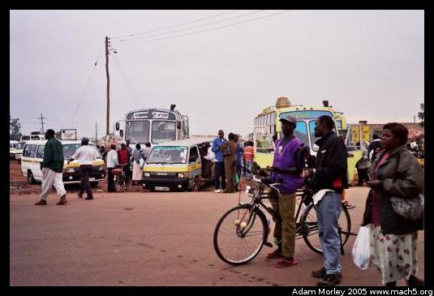The bus stage from the north.
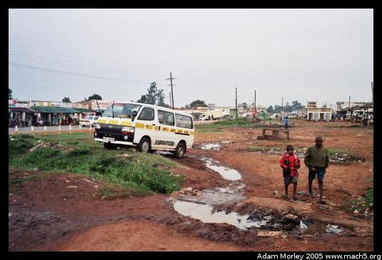On the side of the bus stage, there are some matatus, a little trash, some standing water after the rains,
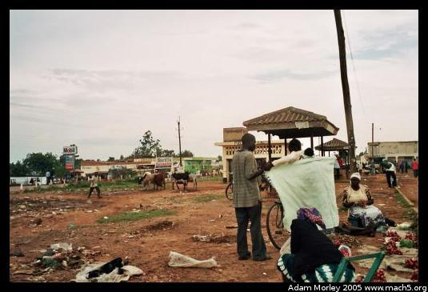some merchants, a few cows, and lots of produce!
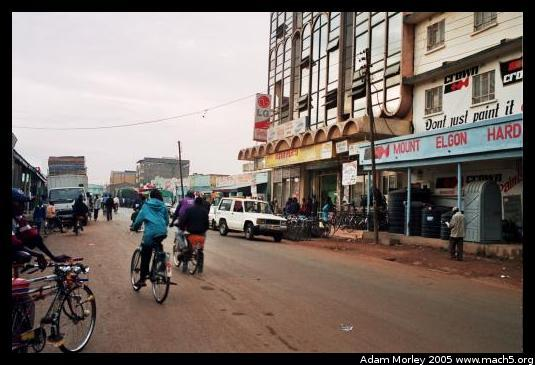Looking north, down the main road. Taken from next to the Bada store (shoes), just north of the new building. Khetia's, a three story everything store (food, solar panels, beds, cell phones, fertilizer, school supplies, and everything else) is the building with the LG sign.
The guidebook titled The Rough Guide to Kenya has this to say of Bungoma:
"Sizeable [sic] as it is, BUNGOMA manages to be unremittingly dull.
I don't agree.
Adam can be reached at adam dot morley at gmail dot com